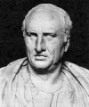

Marcus Tullius Cicero was a Roman statesman, lawyer, political theorist, and philosopher. Cicero is widely considered one of Rome's greatest orators and prose stylists. Cicero is generally seen as one of the most versatile minds of Roman culture and his writing the paragon of Classical Latin. He introduced the Romans to the chief schools of Greek philosophy and created a Latin philosophical vocabulary. An impressive orator and successful lawyer, Cicero likely thought his political career his most important achievement. However, today he is appreciated primarily for his humanism and philosophical and political writings. His voluminous correspondence, much of it addressed to his friend Atticus, has been especially influential, introducing the art of refined letter writing to European culture. Cornelius Nepos, the 1st-century BC biographer of Atticus, remarked that Cicero's letters to Atticus contained such a wealth of detail "concerning the inclinations of leading men, the faults of the generals, and the revolutions in the government" that their reader had little need for a history of the period. During the chaotic latter half of the first century BC, marked by civil wars and the dictatorship of Gaius Julius Caesar, Cicero championed a return to the traditional republican government. However, his career as a statesman was marked by inconsistencies and a tendency to shift his position in response to changes in the political climate. His vacillations may be attributed to his sensitive and impressionable personality; he was prone to overreaction in the face of political and private change. "Would that he had been able to endure prosperity with greater self-control and adversity with more fortitude!" wrote C. Asinius Pollio, a contemporary Roman statesman and historian.